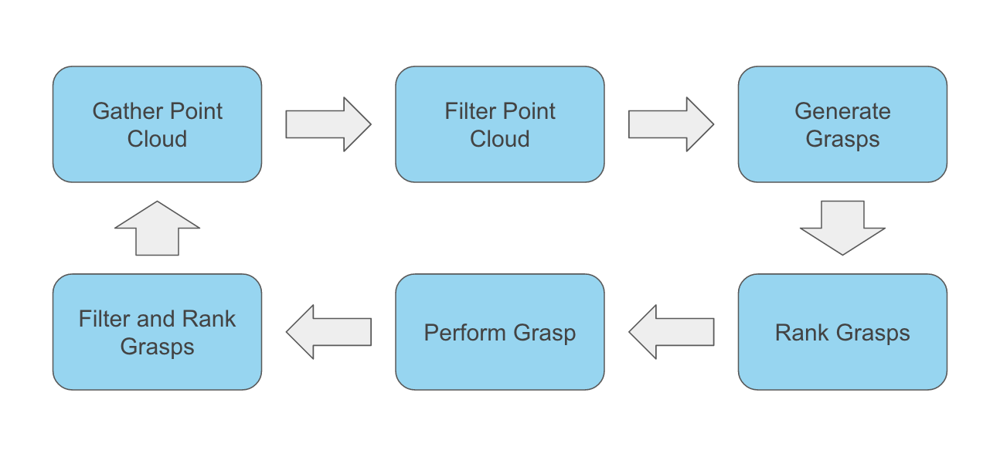

Overview
Models are a great way to gain insight into a problem, but often, they lack the smaller details due to intractability. What our system hopes to present is a way to score grasps that are generated using simulated data. Once that is complete, our system can then be used to generate real world data. Because this is an end of the year project, we tried to incorporate as much of the theory and techniques taught to us this year. For example, we drew from concepts such as force closure, wrench forces, perception, and neural networks.
In practice, our system can be used as a way to gather more labeled data on a robotic system. All that is needed is a way to generate a 3 dimensional point cloud of the object, and then our system will generate possible grasps and execute them. Once executed, the system can update the label of that grasp and add it to the dataset.
Design
In order to test how well simulated data can be used to predict real world grasps, we must first create a representation of a real world object. To create the representation, we use two Xbox Kinects, X1 and X2, placed on opposite sides of an object. We then merge the point clouds by appending the list of points generated by X2 to the list of points generated by X1. After, we filter the point clouds to only include points within a certain region.
Once this filtering is done, what we are left with is a point cloud of our object. From here, we then sample 30 point pairs on our object, which act as the two contact points for a grasp. We then featurize the grasp so that we are able to feed it into our learned model.
For our learned model, we train two neural networks. We train one to classify whether or not a grasp is in force closure, and then we train the other neural network to regress on the Ferrari-Canny metric. This two step process helps us filter out grasps that will not work, and once we have a few candidate grasps, we then the Ferrari-Canny metric to rank the grasps and then perform the highest rank grasp.

Here is what the experimental cycle described looks like. We can iterate through this cycle as many times as we desire. It is by no means perfect, so optimization could be done in the future in order to speed up the process.